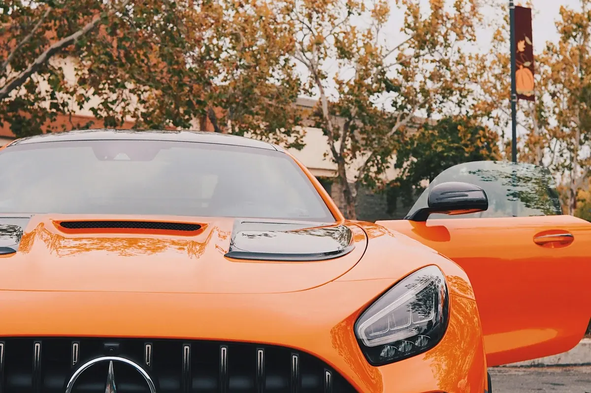

Importare un'auto in Svizzera: un percorso che conosciamo bene
Importare un'auto in Svizzera sembra complicato finché non sai l'ordine delle cose. Dogana, collaudo, targhe: tre passaggi, tre uffici, e ognuno vuole il documento giusto al momento giusto. Le pratiche le ho fatte di persona, quindi so dove si perde tempo.
Lavoriamo sia con i privati che comprano un'auto all'estero, sia con i concessionari che importano in modo regolare.
Importazione auto da Italia, Germania, Francia e Austria
Quasi tutte le importazioni che seguiamo arrivano da quattro Paesi: Italia, Germania, Francia e Austria. I documenti cambiano un po', la procedura svizzera no.

1. Sdoganamento
Il veicolo entra in Svizzera e passa dalla dogana. Si pagano l'IVA al 8,1% e il dazio, calcolati sul valore d'acquisto, più la tassa automobilistica del 4%. Da gennaio 2024 l'esenzione per le auto elettriche non c'è più: pagano anche loro.
2. Collaudo e omologazione
Dopo la dogana il veicolo va presentato al servizio cantonale della circolazione. Si controlla che sia conforme alle norme svizzere: fari, emissioni, dimensioni. Se qualcosa non torna, bisogna adeguarlo prima di proseguire.
3. Immatricolazione e targhe
Superato il collaudo si richiedono le targhe, con l'assicurazione RC svizzera già attiva. Da quel momento l'auto può circolare.
La sanzione CO2: la voce che molti scoprono troppo tardi
Sulle auto recenti può aggiungersi la sanzione CO2. Non si paga in dogana: arriva dopo, dall'Ufficio federale dell'energia, e su un'auto potente può valere qualche migliaio di franchi. È la voce che la gente scopre troppo tardi, quindi te la calcoliamo prima.
Ti trasferisci in Svizzera? L'auto entra in franchigia
Chi sposta il domicilio in Svizzera può portare la propria auto in franchigia, come bene di trasloco: niente IVA né dazio. Servono il modulo 18.44, la prova che l'auto era tua e in uso da almeno sei mesi prima del trasferimento, e l'impegno a non venderla per un anno.
Le targhe si richiedono poi all'ufficio cantonale della circolazione, dopo il collaudo.
Esportazione veicoli dalla Svizzera
Nell'altro senso: se vendi un veicolo svizzero all'estero serve la dichiarazione d'esportazione, la radiazione dal registro svizzero e le targhe provvisorie per il viaggio.
Ai concessionari che vendono spesso all'estero prepariamo le pratiche in blocco, così non si ferma la consegna.
Dalla Svizzera all'Italia: l'altro senso di marcia
Dalla Svizzera verso l'Italia i conti cambiano, perché la Svizzera non è nell'Unione Europea: all'ingresso si pagano IVA italiana al 22% e dazio, salvo che il veicolo sia di origine UE e lo si dimostri.
Poi comincia la nazionalizzazione: verifica al centro prova, versamento all'Agenzia delle Entrate e immatricolazione alla Motorizzazione. Tre passaggi, ognuno con i suoi tempi.
Se invece vendi dalla Svizzera, il veicolo va radiato dal registro svizzero prima di partire.